Problem 1
Equivalent Resistance Using Graph Theory
Motivation
The equivalent resistance between two terminals (START and END) in an electrical network is a central concept in circuit analysis. While basic configurations can be handled with simple series and parallel rules, complex circuits with many junctions and loops require a more robust approach.
Using graph theory, we model the circuit as a graph where: - Nodes represent junctions, - Edges represent resistors, - Weights on edges represent resistance values.
This transforms circuit simplification into a graph-reduction problem. The process can be fully automated and is essential for tasks like circuit simulation, network optimization, and computer-aided design.
1. Graph-Based Circuit Simplification
Step-by-Step Approach
Given a weighted undirected graph:
- START and END are the terminals.
- Each edge \(e_{ij}\) has a resistance \(R_{ij}\).
- The goal is to compute a single equivalent resistance \(R_{\text{eq}}\) between START and END.
We apply the following reduction rules iteratively:
1.1 Series Reduction
If a node (not START or END) has exactly two neighbors and connects only to them, its resistors are in series.
Replace this subgraph:
A -- R₁ -- B -- R₂ -- C
with:
A -- R₁₂ -- C
Where:
1.2 Parallel Reduction
If multiple resistors connect the same two nodes, they are in parallel.
Replace this:
A -- R₁ -- B A -- R₂ -- B
with:
Where:
1.3 Iteration
Repeat series and parallel simplification until only one resistor remains between START and END:
import networkx as nx
import matplotlib.pyplot as plt
from IPython.display import display, Image
import io
# Global step counter
step_counter = 0
# Initialize graph
G = nx.DiGraph()
edges = [
('B+', 'R2'), ('R2', 'R3'), ('R3', 'R4'), ('B+', 'R1'), ('R1', 'R4'),
('R4', 'R5'), ('R5', 'B-')
]
G.add_edges_from(edges)
def draw_graph(G, highlight_nodes=[], title="Step"):
global step_counter
print(f"Drawing graph: {title}")
pos = nx.spring_layout(G, seed=42)
fig, ax = plt.subplots(figsize=(8, 6))
node_colors = ['red' if node in highlight_nodes else 'lightgray' for node in G.nodes()]
nx.draw(G, pos, with_labels=True, arrows=True, node_color=node_colors, node_size=1000, ax=ax)
plt.title(title)
buf = io.BytesIO()
plt.savefig(buf, format='png')
buf.seek(0)
display(Image(data=buf.read()))
plt.close()
step_counter += 1
# Step 1: Draw initial
draw_graph(G, title="Initial Circuit")
# === Step 2: Series Merge R2 + R3 -> R23 ===
G.add_edge('R23', 'R4')
G.remove_edge('R2', 'R3')
G.remove_edge('R3', 'R4')
G = nx.relabel_nodes(G, {'R2': 'R23'})
G.remove_node('R3')
draw_graph(G, highlight_nodes=['R23'], title="Series Merge: R2 + R3 → R23")
# === Step 3: Series Merge R4 + R5 -> R45 ===
G.add_edge('R45', 'B-')
G.remove_edge('R4', 'R5')
G.remove_edge('R5', 'B-')
G = nx.relabel_nodes(G, {'R4': 'R45'})
G.remove_node('R5')
draw_graph(G, highlight_nodes=['R45'], title="Series Merge: R4 + R5 → R45")
# === Step 4: Connect R1 and R23 directly to R45 if not already ===
# (This ensures all 3 are feeding into same node)
G.add_edge('R1', 'R45')
G.add_edge('R23', 'R45')
# === Step 5: Merge R1, R23, R45 (Parallel) → R12345 ===
# All three go from B+ to B-, now merge into single R12345
G.add_edge('R12345', 'B-')
G.remove_edge('R1', 'R45')
G.remove_edge('R23', 'R45')
G.remove_edge('R45', 'B-')
G = nx.relabel_nodes(G, {'R1': 'R12345'})
G.remove_node('R23')
G.remove_node('R45')
draw_graph(G, highlight_nodes=['R12345'], title="Parallel Merge: R1 || R23 || R45 → R12345")
# Final
draw_graph(G, title="Final Simplified Circuit")
 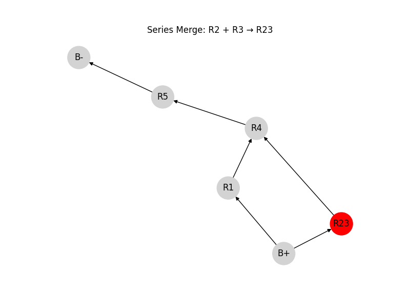
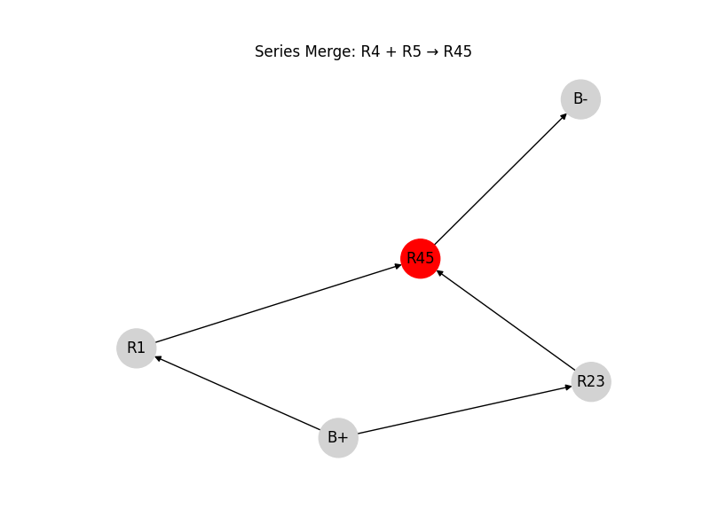
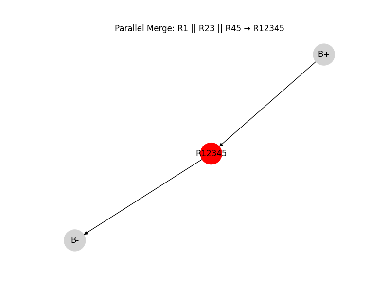
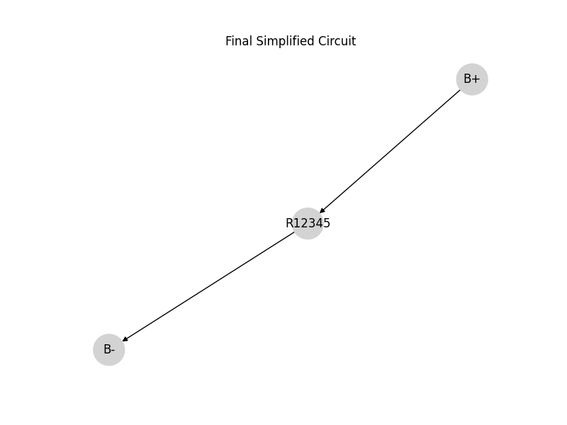
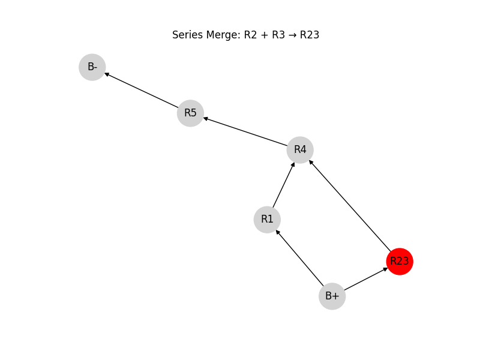
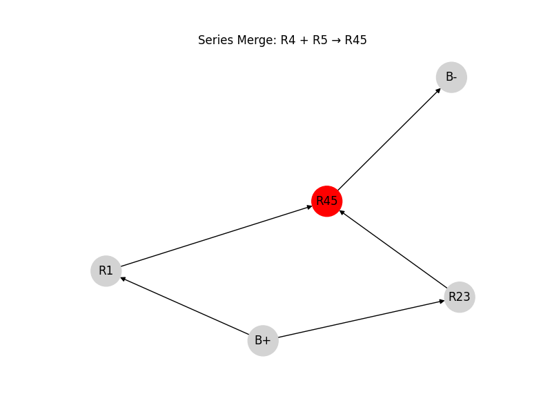
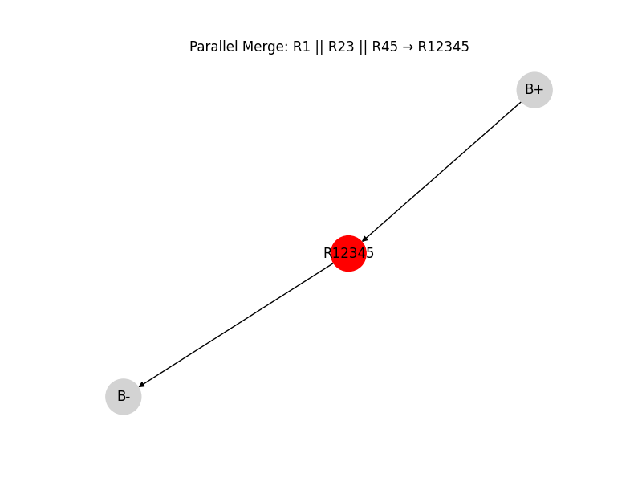
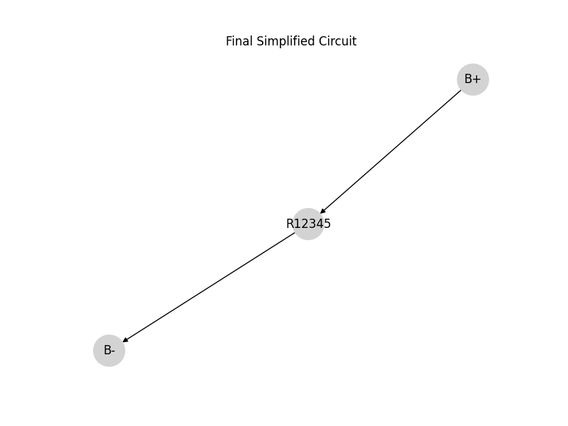
2. Python Algorithm
Step 1: Original Circuit (with parallel and series resistors)
3. Example Analysis
Given the test circuit:
- START → A: \(R = 2\,\Omega\)
- A → B: \(R = 3\,\Omega\)
- B → END: \(R = 4\,\Omega\)
- A → END: \(R = 6\,\Omega\)
Step-by-step:
-
Combine A–B and B–END (series):
\(R_{\text{AB-END}} = 3 + 4 = 7\,\Omega\) -
A has two paths to END:
- One path is: \(7\,\Omega\)
-
Other path is: \(6\,\Omega\)
-
Combine those in parallel:
$$ \frac{1}{R_{\text{eq}}} = \frac{1}{6} + \frac{1}{7} = \frac{13}{42} \Rightarrow R_{\text{eq}} \approx 3.23\,\Omega $$
- Finally, add START–A:
$$ R_{\text{total}} = 2 + 3.23 = 5.23\,\Omega $$
import networkx as nx
import matplotlib.pyplot as plt
def draw_circuit(G, step_title):
pos = nx.spring_layout(G, seed=42)
labels = nx.get_edge_attributes(G, 'resistance')
labels = {k: f"{v:.2f}Ω" for k, v in labels.items()}
plt.figure(figsize=(6, 4))
nx.draw(G, pos, with_labels=True, node_color='skyblue', node_size=800, font_weight='bold')
nx.draw_networkx_edge_labels(G, pos, edge_labels=labels)
plt.title(step_title)
plt.axis('off')
plt.show()
def combine_series_with_steps(G, step):
changed = True
while changed:
changed = False
for node in list(G.nodes):
neighbors = list(G.neighbors(node))
if len(neighbors) == 2 and node not in ('START', 'END'):
n1, n2 = neighbors
if G.number_of_edges(node, n1) == 1 and G.number_of_edges(node, n2) == 1:
r1 = G.edges[node, n1]['resistance']
r2 = G.edges[node, n2]['resistance']
req = r1 + r2
print(f"🔗 Series merge: {r1}Ω + {r2}Ω = {req}Ω between {n1}–{n2} (via {node})")
G.add_edge(n1, n2, resistance=req)
G.remove_node(node)
step[0] += 1
draw_circuit(G, f"Step {step[0]}: Series merged {n1}–{n2}")
changed = True
break
return G
def combine_parallel_with_steps(G, step):
changed = True
while changed:
changed = False
seen = set()
for u, v in list(G.edges):
if (u, v) in seen or (v, u) in seen:
continue
parallel_edges = [(a, b, data['resistance']) for a, b, data in G.edges(data=True)
if {a, b} == {u, v}]
if len(parallel_edges) > 1:
resistances = [r for _, _, r in parallel_edges]
req = 1 / sum(1 / r for r in resistances)
print(f"🔀 Parallel merge: {' || '.join(f'{r}Ω' for r in resistances)} = {req:.2f}Ω between {u}–{v}")
G.remove_edges_from([(u, v)] * len(parallel_edges))
G.add_edge(u, v, resistance=req)
seen.add((u, v))
step[0] += 1
draw_circuit(G, f"Step {step[0]}: Parallel merged {u}–{v}")
changed = True
return G
def simplify_and_plot_step_by_step(G):
step = [1]
draw_circuit(G, f"Step {step[0]}: Original Circuit")
while True:
old_edges = list(G.edges(data=True))
G = combine_series_with_steps(G, step)
G = combine_parallel_with_steps(G, step)
new_edges = list(G.edges(data=True))
if old_edges == new_edges:
break
return G
# Define the original circuit
G = nx.Graph()
G.add_edge('START', 'A', resistance=2)
G.add_edge('A', 'B', resistance=4)
G.add_edge('B', 'END', resistance=6)
G.add_edge('START', 'X', resistance=3)
G.add_edge('X', 'Y', resistance=5)
G.add_edge('Y', 'END', resistance=7)
# Run and show each simplification step
final_G = simplify_and_plot_step_by_step(G)
# Calculate final resistance
start_end_edges = [
data['resistance']
for u, v, data in final_G.edges(data=True)
if {'START', 'END'} == {u, v}
]
if len(start_end_edges) == 1:
total_resistance = start_end_edges[0]
elif len(start_end_edges) > 1:
total_resistance = 1 / sum(1 / r for r in start_end_edges)
else:
total_resistance = None
total_resistance
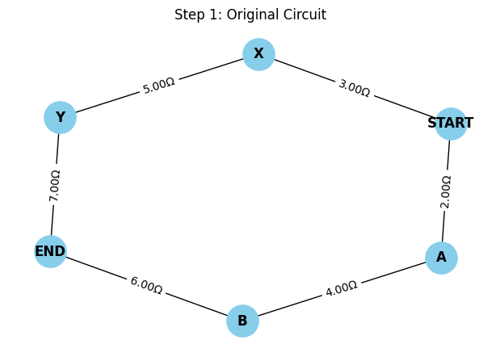 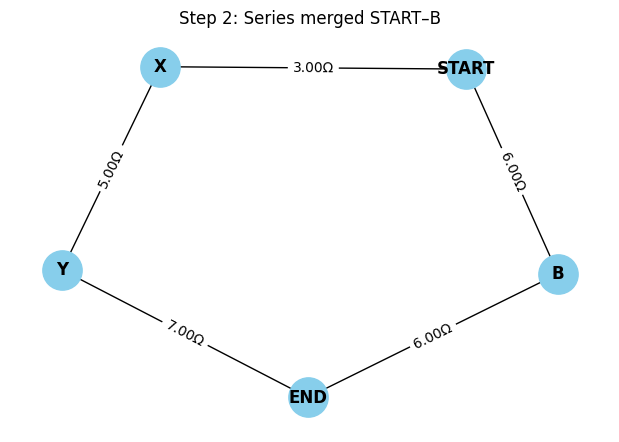 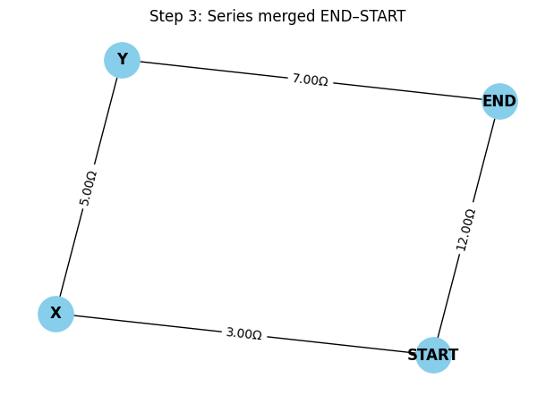 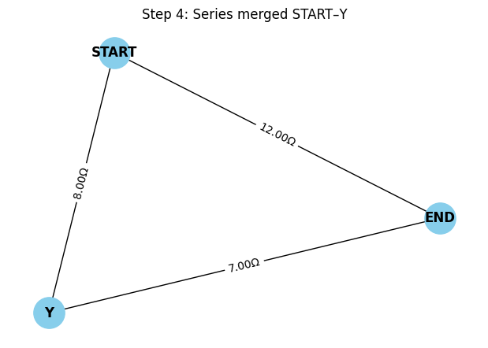 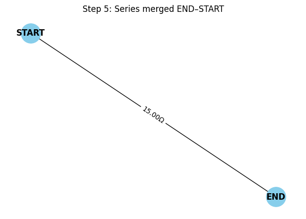
import networkx as nx
import matplotlib.pyplot as plt
# Helper function to draw the circuit with step labels
def draw_circuit(G, step_title, step_num):
pos = nx.spring_layout(G, seed=42)
labels = nx.get_edge_attributes(G, 'resistance')
labels = {k: f"{v:.2f}Ω" for k, v in labels.items()}
plt.figure(figsize=(6, 4))
nx.draw(G, pos, with_labels=True, node_color='skyblue', node_size=800, font_weight='bold')
nx.draw_networkx_edge_labels(G, pos, edge_labels=labels)
plt.title(f"Step {step_num}: {step_title}")
plt.axis('off')
plt.show()
# Function to simplify series and parallel step by step
def simplify_circuit_stepwise(G):
step = 0
draw_circuit(G, "Original Nested Circuit", step)
step += 1
# Step 1: Combine C-D (4Ω) and B-C (2Ω) in series to form B-D path through C
G.remove_edge('B', 'C')
G.remove_edge('C', 'D')
G.remove_node('C')
G.add_edge('B', 'D', resistance=6) # new series path via C
draw_circuit(G, "Series: B–C–D → 6Ω", step)
step += 1
# Step 2: B–D (6Ω from B-C-D) and B–D (4Ω) in parallel
# Combine 6Ω and 4Ω in parallel
R_parallel = 1 / (1/6 + 1/4)
G.remove_edges_from([('B', 'D')]) # remove both paths
G.add_edge('B', 'D', resistance=R_parallel)
draw_circuit(G, "Parallel: B–D paths (6Ω || 4Ω)", step)
step += 1
# Step 3: A–B (2Ω) in series with B–D (2.4Ω)
G.remove_edge('A', 'B')
G.remove_edge('B', 'D')
G.remove_node('B')
G.add_edge('A', 'D', resistance=2 + R_parallel)
draw_circuit(G, "Series: A–B–D → 4.4Ω", step)
step += 1
# Step 4: A–D (4.4Ω) in series with D–E (1Ω)
G.remove_edge('D', 'E')
G.remove_edge('A', 'D')
G.remove_node('D')
G.add_edge('A', 'E', resistance=4.4 + 1)
draw_circuit(G, "Series: A–D–E → 5.4Ω", step)
step += 1
return G
# Initial nested circuit
G = nx.Graph()
G.add_edge('A', 'B', resistance=2)
G.add_edge('B', 'C', resistance=2)
G.add_edge('C', 'D', resistance=4)
G.add_edge('B', 'D', resistance=4)
G.add_edge('D', 'E', resistance=1)
# Perform step-by-step simplification
final_graph = simplify_circuit_stepwise(G)
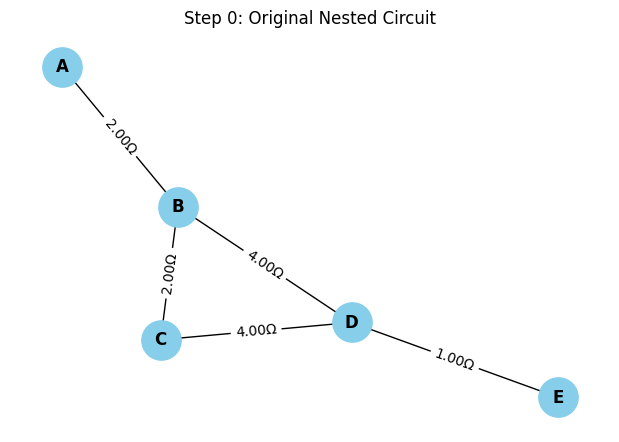 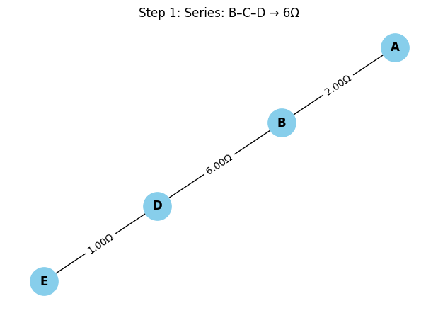 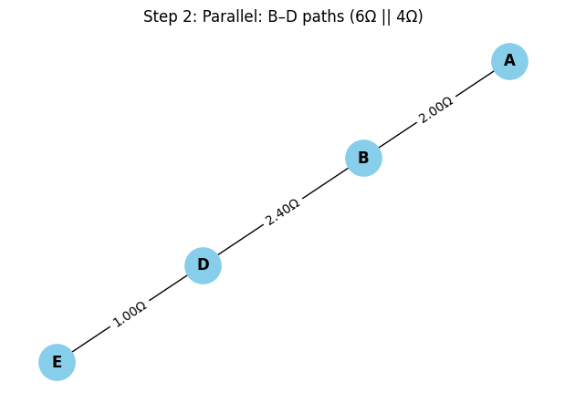 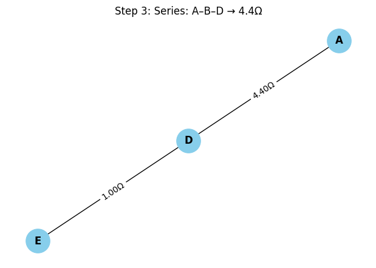 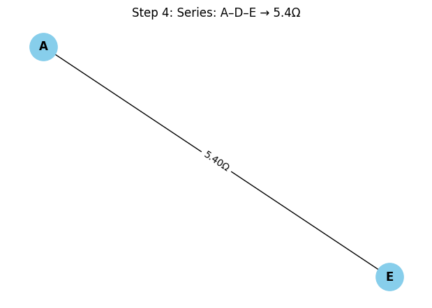
4. Conclusion
We showed how to:
- Use graph theory to model electrical circuits.
- Detect and simplify series and parallel connections.
- Automate the process using Python and
networkx.
This method scales well to arbitrarily complex networks and is highly applicable to modern engineering workflows such as simulation, layout, and optimization of electrical systems.